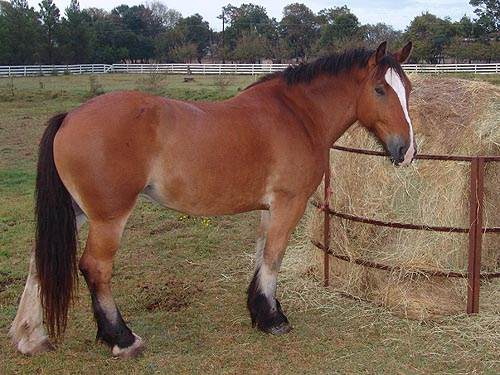
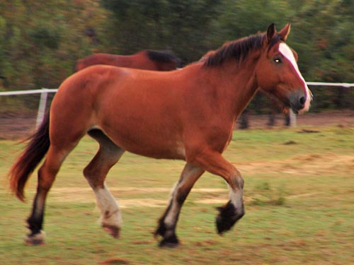
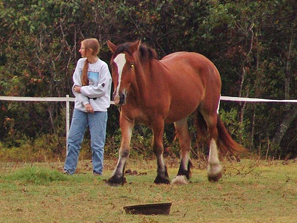
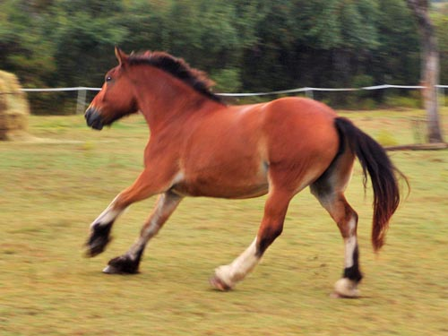
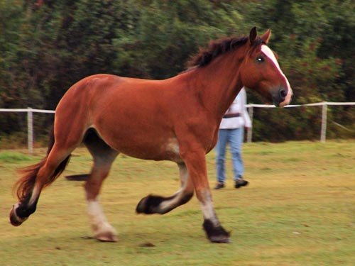
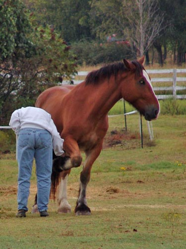
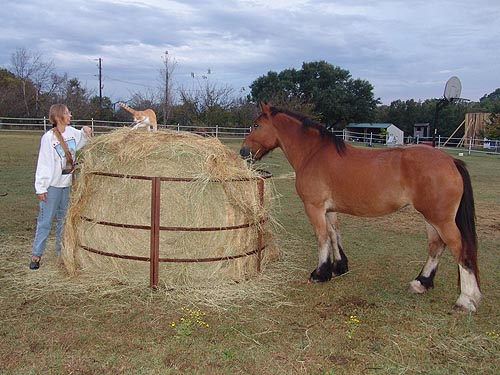
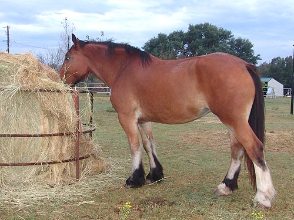

Arriving at the House It was raining when she arrived, but she
still
trotted around and met the guys and investigated.
She went and met Bob, and no squealing
or striking.
I'll leave them separated for a day or
two, then integrate them.
Bob and Thuy are unhappy to be away from
the hay, and
eventually Bob will be with the hay and
Thuy and the mare will
be on a diet.

She talked to Bob for a few
seconds, then ran over to the hay bale.

Showing her knee action. She
doesn't paddle at all, and under saddle her trot feels pretty big/suspended.

She's quite friendly, but always
ends up back at the hay.

Unlike Thuy as a 4 yr old, she
doesn't seem to mind picking up a canter and running around a bit.

Trotting out in what I call
a driving horse trot. She doesn't drive, but this is how Bob trots when
he's 'going somewhere'.

No need to tie her up to check
her feet (which are huge). They seem hard as rocks and will hopefully wear
like Thuy's and not need shoes.

Watching the cat and I play.
Bart said she's like Emma's head on Thuy's body.
Not really that bad of a head, but except
for a couple of more inches, she sure does remind one of Thuy....

Side by side, she does make
Thuy and Bob look refined. Still, she's got a wither and looks light on
her feet in the trot.